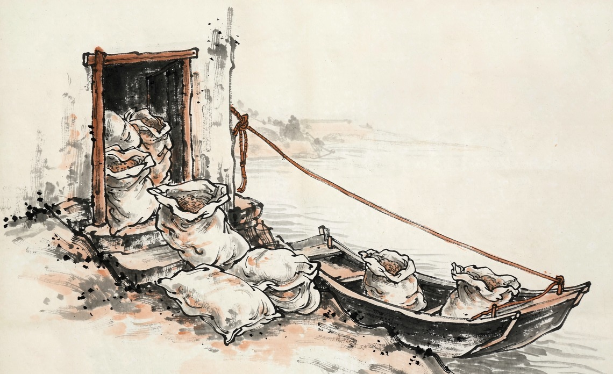
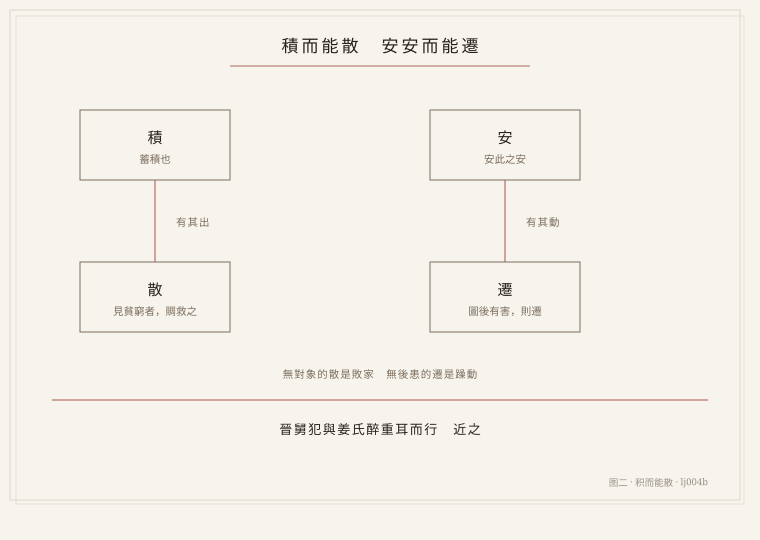

曲礼上 · 一·五 · 第 4 课
前两课说人，这一课说物与境：有钱怎么用，安处怎么动。
说什么事：说两种「能」——聚得住而散得开，安得下而迁得动。
落在哪一层：义。此处不论仪节，论的是取舍的时机。
为何编在此位：爱憎之偏既已立界，接着便要防另一种偏：对物的偏、对安处的偏。人于财与安，最容易把「守着」当德。
【经】積而能散，安安而能遷。
積 聚也，指蓄积、财货、也指一切攒下来的东西——声望、人情、力气。
能散 郑注：「謂己有蓄積，見貧窮者，則當能散以賙救之，若宋樂氏。」散是賙救，不是挥霍；能散的前提是「見貧窮者」，是有对象、有看见。
安安 叠字。前一「安」是动词：安于此安；后一「安」是名词：所安之处。读作「安于所安」。
能遷 郑注：「謂己今安此之安，圖後有害，則當能遷。晉舅犯與姜氏醉重耳而行，近之。」——「圖後有害」四字是全句的关键：迁不是坐不住，是看见了后患。
句读 「積而能散」一读，「安安而能遷」一读，两两相对：前者对物，后者对境。两句皆有「能」字，说明所许的不是「散」「迁」本身，是「散得动」「迁得动」的那个能力。
有所蓄积，能够散出去救人；安于所安，却能在预见后患时迁开。
聚而不守，安而不滞——能散能迁，才是真守得住。
第一层 积与散 积是本事，散是分寸。郑注把散限定为「賙救」，因为无对象的散只是败家；有对象的散才是礼。礼在这里不反对富，只反对「积而不能动」——财一旦只进不出，人就反过来被财守住了。
第二层 安与迁 「安安」两个字写尽人的惰性：安于所安，久之把「安」当成「对」。郑注给出迁的条件只有一个——「圖後有害」。不是不安于现状，是看见了害。重耳在齐，乐不思晋，是舅犯与姜氏把他醉遣出去；郑说此事「近之」，正说明迁常须借外力，人自己难得动。
第三层 与今日何干 今日两难极具体：钱攒着不敢用，用到该用处又舍不得；一个位置待久了，明知无路，仍以「稳定」为名不动。此句不劝人散尽、不劝人跳槽，只给两个条件：散要见人，迁要见图后之害。没有对象的散是任性，没有后患的迁是躁动。
| 左 | 右 |
|---|---|
| 积：攒得住 | 散：见贫穷者，散得动 |
| 安：安于所安 | 迁：图后有害，迁得开 |
| 无对象的散是败家 | 无后患的迁是躁动 |
| 财守人，不是人守财 | 安守人，不是人守安 |

